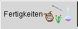
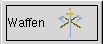
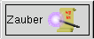

(Mit der Maus auswählen)

 Herkunftsland wählen:
Herkunftsland wählen:
Über diesen Button wird das Herkunftsland des Abenteurers ausgewählt.
 Lernpunkte würfeln:
Lernpunkte würfeln:
Das Anklicken dieses Buttons hat zur Folge, dass die Lernpunkte für die verschiedenen Bereiche ausgewürfelt werden.
 Lernpunkte Editieren:
Lernpunkte Editieren:
Die bereits erwürfelten Lernpunkte können in den jeweiligen Feldern manuell editiert werden. Alternativ können die Lernpunkte von vorneherein manuell eingegeben werden.
 Geld und Waffen:
Geld und Waffen:
Hinter diesem Button verbirgt sich die Möglichkeit, Geld und Waffen für den Abenteurer auszuwürfeln oder alternativ auszuwählen.
 Fenster: Waffen und Geld
Fenster: Waffen und Geld
Zunächst wird bestimmt, ob Geld, bzw. Waffen ausgewählt oder ausgewürfelt werden. (Würfeln ist voreingestelt).
Es kann jeweils nur einmal für Geld oder Waffen gewürfelt werden. Sobald ein Button betätigt wurde, ist er nicht
mehr auswählbar ('Geisterschrift')
 Rüstung würfeln:
Rüstung würfeln:
Die Rüstung des Abenteurers wird ausgewürfelt.


Fähigkeiten
Dieser Reiter führt zu der Auswahl der erlernten, sowie der angeborenen Fertigkeiten.

Waffen
Hier erhält der Abenteurer die Waffenfertigkeiten, die er zu Begin seiner Laufbahn beherrscht.

Zauber:
Magiekundige Abenteurer wählen hier ihre Zauber aus, die sie von Anfang an beherrschen.
Dieses Lernschema ist nur sichtbar, wenn der Abenteurertyp Magie berherrscht.
 Beruf:
Beruf:
Der Beruf des Abenteurers wird hier festgelegt.